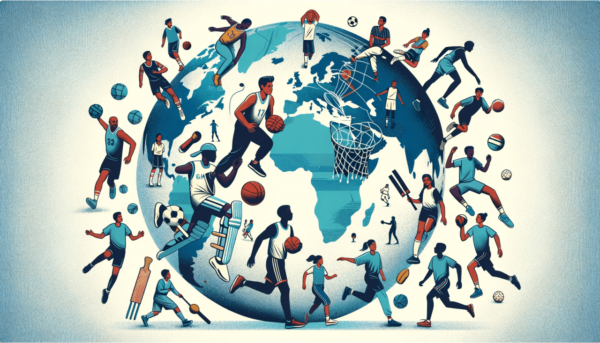

Sports have a profound cultural impact, serving as a unifying force
that transcends national and social boundaries.
For example, soccer, known as football outside the United States, is a
global phenomenon that unites diverse cultures through events like the
FIFA World Cup, where nations from all continents come together,
fostering a sense of global community and shared passion.
In India, cricket has an almost religious following, with the Indian
Premier League (IPL) transforming the sport into a cultural
celebration that brings together people of different regions and
languages.
Similarly, basketball has made significant cultural contributions,
particularly in the United States, where the NBA has not only
popularized the sport but also influenced music, fashion, and social
movements. The Olympics, another prime example, showcase a wide array
of sports, highlighting the cultural diversity and sporting spirit of
countries worldwide, and promoting values of peace, respect, and
excellence.
These examples illustrate how sports play a vital role in shaping
cultural identities, bridging gaps between communities, and inspiring
collective pride and unity across the globe.
What Sports mean to Athletes:
Michael Jordan
Basketball

I've missed more than 9,000 shots in my career. I've lost almost
300 games. Twenty-six times I've been trusted to take the
game-winning shot and missed. I've failed over and over and over
again in my life. And that is why I succeed.
This quote highlights Jordan's resilience and the importance of
perseverance and learning from failure in sports.
Michael Jordan
Basketball
I've missed more than 9,000 shots in my career. I've lost almost
300 games. Twenty-six times I've been trusted to take the
game-winning shot and missed. I've failed over and over and over
again in my life. And that is why I succeed.
This quote highlights Jordan's resilience and the importance of
perseverance and learning from failure in sports.
Michael Jordan
Basketball
I've missed more than 9,000 shots in my career. I've lost almost
300 games. Twenty-six times I've been trusted to take the
game-winning shot and missed. I've failed over and over and over
again in my life. And that is why I succeed.
This quote highlights Jordan's resilience and the importance of
perseverance and learning from failure in sports.
Michael Jordan
Basketball
I've missed more than 9,000 shots in my career. I've lost almost
300 games. Twenty-six times I've been trusted to take the
game-winning shot and missed. I've failed over and over and over
again in my life. And that is why I succeed.
This quote highlights Jordan's resilience and the importance of
perseverance and learning from failure in sports.
What Sports mean to You
You can tell us what sports mean to you if you wish. What makes you
feel doing your sport, what important experiences you had doing this
sport, how it changed your world. We would really appreciate people
giving us their view on their culture and life
Daily Life and Traditions in Sports all around the world:
Have you ever wondered how Sports are integrated into the daily lives
and traditions of different cultures?
These events below provide a rich visual insight into how sports are
an integral part of daily life and cultural traditions in different
parts of the world
Kabaddi in India
Kabaddi is a popular sport in rural India, often played in village
squares and school grounds. It is deeply rooted in Indian culture
and tradition
Kabaddi in India
Kabaddi is a popular sport in rural India, often played in village
squares and school grounds. It is deeply rooted in Indian culture
and tradition